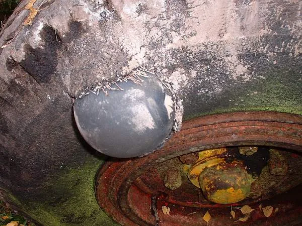

▲ 고장자동차 표지는 선택이 아니라 법으로 정해진 항목이다 ⓒ Wikimedia Commons
트렁크에 뭘 넣어둬야 하는지는 평소에 생각하지 않습니다.
필요해지는 순간은 언제나 갑자기 옵니다.
그리고 그 순간은 대개 연휴, 밤, 낯선 지역입니다.
1. 법으로 정해진 것
| 항목 | 내용 |
|---|---|
| 고장자동차 표지 (안전삼각대) | 도로교통법상 고장·정차 시 설치 의무 — 차에 갖춰둬야 함 |
| 차량용 소화기 | 2024년 12월 1일부터 5인승 이상 승용차로 확대 — 종전 7인승 이상 |
📍 내 차가 대상인지부터 확인하세요
확대된 의무는 이미 등록된 차량에 소급 적용되지 않습니다. 신규 등록하거나 소유권이 바뀌는 시점부터 대상이 됩니다. 2024년 12월 1일 이전에 등록해 계속 보유 중인 차라면 법적 의무는 아닙니다.
다만 의무가 아니라는 것과 필요 없다는 것은 다릅니다. 차량 화재는 초기 대응이 전부입니다.
📍 소화기는 '차량용'이어야 합니다
집에서 쓰던 소화기를 실어두는 것으로는 기준을 충족하지 못합니다. '자동차 겸용' 표시가 있는 제품이어야 합니다.
차량은 진동과 온도 변화가 심해 일반 소화기는 성능이 유지되지 않을 수 있습니다. 자세한 내용은 차량용 소화기 의무화에서 다뤘습니다.
⚠️ 삼각대는 '있는 것'과 '쓰는 것'이 다릅니다
· 트렁크에 있어야 하지만, 고속도로에서는 설치보다 대피가 우선입니다
· 설치하러 도로를 걸어가는 행위가 2차 사고의 주요 원인입니다
· 순서는 비상등·트렁크 열기 → 대피 → 신고 → (여건 되면) 삼각대입니다
· 자세한 내용은 2차 사고 대처법 참고
2. 법에는 없지만 사실상 필수
| 물건 | 쓰임 |
|---|---|
| 점프 케이블 | 배터리 방전 — 긴급출동 호출 1위 상황 |
| 타이어 수리 키트 | 못 등에 의한 트레드 펑크 응급 처치 |
| 손전등 | 야간 점검 — 휴대폰 배터리를 아낌 |
| 목장갑 | 타이어 교체·엔진룸 작업 |
| 차량용 보조배터리 | 점프 스타터 겸용 제품이 유용 |
📍 수리 키트로 안 되는 펑크가 있습니다
수리 키트는 접지면(트레드)에 못이 박힌 경우에 씁니다. 측면(사이드월)이 찢어지거나 부푼 경우에는 쓸 수 없습니다. 이때는 견인이 답입니다.
또한 최근 차량은 스페어타이어 대신 수리 키트만 넣는 경우가 많습니다. 내 차에 스페어가 있는지 미리 확인해두는 것이 좋습니다.

▲ 측면 손상은 수리 키트로 해결되지 않는다 ⓒ Wikimedia Commons
3. 계절과 상황이 더하는 것
| 상황 | 추가 항목 |
|---|---|
| 연휴·장거리 | 생수 · 간식 · 보조배터리 · 멀미약 |
| 겨울 | 담요 · 성에 제거기 · 워셔액(동절기용) · 체인 |
| 여름 | 양산·모자 · 여분 워셔액 |
| 아이 동승 | 물티슈 · 비닐봉지 · 여벌 옷 |
📍 담요가 겨울 필수인 이유
겨울에 차가 멈추면 실내 온도가 빠르게 떨어집니다. 시동이 안 걸리면 히터도 쓸 수 없습니다.
구조나 견인을 기다리는 1~2시간이 문제가 됩니다. 담요 하나가 그 시간을 견디게 해줍니다. 부피 대비 효용이 가장 큰 물건입니다.
4. 넣으면 안 되는 것
의외로 이 항목을 모르는 경우가 많습니다.
| 물건 | 이유 |
|---|---|
| 라이터 · 부탄가스 | 여름 실내 고온에서 파열 위험 |
| 스프레이 캔 | 가압 용기 — 같은 이유 |
| 탄산음료 | 고온·저온에서 터질 수 있음 |
| 보조배터리(장기 방치) | 고온에서 리튬 배터리 팽창·발화 위험 |
| 무거운 물건(고정 안 함) | 급제동 시 흉기가 됨 |
⚠️ 마지막 항목이 가장 위험합니다
· 트렁크가 아니라 실내에 둔 무거운 물건이 문제입니다
· 시속 50km 충돌에서 물건에 걸리는 힘은 무게의 수십 배가 됩니다
· 뒷좌석에 둔 공구함, 물통, 노트북도 대상입니다
· 트렁크에 넣고 고정하는 것이 원칙입니다

▲ 실내에 고정하지 않고 둔 무거운 물건은 충돌 시 흉기가 된다 ⓒ 기아
5. 넣어두고 끝이 아닙니다
| 항목 | 확인 내용 |
|---|---|
| 소화기 | 압력 게이지가 녹색 범위인지 · 유효기간 |
| 수리 키트 | 실런트 유효기간 — 굳으면 못 씁니다 |
| 손전등 | 건전지 방전 여부 |
| 생수 | 여름 고온에 오래 두지 않기 |
| 스페어타이어 | 공기압 — 오래 두면 빠집니다 |
📍 스페어타이어 공기압이 함정입니다
스페어는 몇 년씩 안 꺼내는 물건입니다. 그사이 공기가 자연히 빠집니다.
정작 펑크가 나서 꺼냈는데 스페어도 물렁하면 아무 소용이 없습니다. 정기검사나 엔진오일 교환 때 같이 확인해 달라고 요청하는 편이 현실적입니다.
6. 어떻게 넣어둘까
✅ 정리 요령
· 하나의 상자에 모읍니다 — 흩어져 있으면 급할 때 못 찾습니다
· 삼각대와 소화기는 바로 꺼낼 수 있는 위치에 둡니다
· 소화기는 트렁크보다 운전석에서 손이 닿는 곳이 이상적입니다
· 상자를 고정합니다 — 굴러다니면 소음과 위험이 됩니다
· 1년에 한 번, 계절이 바뀔 때 내용물을 점검합니다
세 번째 항목에 이유가 있습니다. 차량 화재는 초기 몇 분이 전부입니다. 소화기가 트렁크 깊숙이 있으면 꺼내는 사이에 손쓸 수 없게 됩니다.

▲ 필요한 순간은 대개 연휴, 밤, 낯선 지역에 온다 ⓒ Wikimedia Commons

▲ 연휴에는 정비소가 닫혀 있다. 트렁크 안의 물건이 전부가 된다 ⓒ Wikimedia Commons
7. 정리
법으로 정해진 것은 두 가지입니다. 고장자동차 표지(안전삼각대)와 차량용 소화기입니다. 소화기는 2024년 12월 1일부터 5인승 이상 승용차로 확대됐지만 기존 등록 차량에는 소급되지 않습니다. 반드시 '자동차 겸용' 제품이어야 합니다.
법에는 없지만 실제로 쓰이는 것은 점프 케이블, 타이어 수리 키트, 손전등, 장갑입니다. 겨울에는 담요가 부피 대비 효용이 가장 큽니다.
반대로 라이터·부탄가스·스프레이 캔은 두면 안 됩니다. 가장 위험한 것은 실내에 고정하지 않은 무거운 물건입니다. 그리고 넣어두고 끝이 아니라, 소화기 압력과 스페어타이어 공기압은 주기적으로 확인해야 합니다.